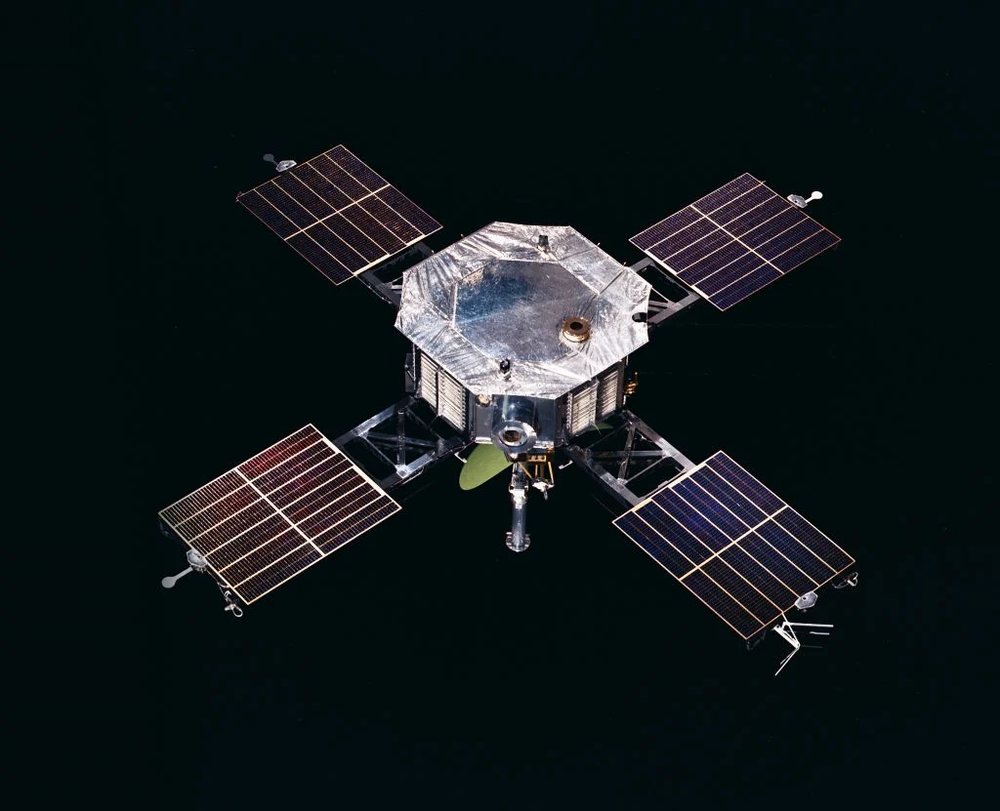

60 anos de NASA | Conheça a história e os projetos da agência espacial dos EUA
By Lucas Miller |
Quando se fala em exploração espacial, geralmente o primeiro nome que vem à mente é o da NASA, mas nem sempre foi assim. A história da National Aeronautics and Space
Administration teve início com disputas acirradas entre os Estados Unidos e a União Soviética pela conquista do espaço.
Com a pressão soviética, responsável pelo lançamento do primeiro satélite artificial do mundo, os Estados
Unidos perceberam a urgência em investir em tecnologias para a Corrida Espacial. Sentindo-se ameaçados
pelo poderio russo, os norte-americanos
resolveram fundar uma agência nacional para administrar a atividade espacial não-militar do país.
Em meio à Guerra Fria, o então presidente dos Estados Unidos, Dwight David Eisenhower, assinou o decreto que deu origem à
NASA em 29 de julho de 1958. O início de seus trabalhos, no entanto, se deu no dia 1º de outubro do mesmo ano.
Largando atrás, indo mais longe
Astronautas da Nasa
Apesar de a URSS ter lançado o primeiro satélite artificial à órbita da Terra (o Sputnik), ter levado o
primeiro animal (a cadela Laika) e a primeira pessoa ao espaço (o cosmonauta Yuri Gagarin), por meio da
NASA os Estados
Unidos conseguiram um feito que gera polêmica até hoje: o país foi o primeiro a levar a humanidade à Lua.
Deixando de lado as discussões sobre a veracidade dos acontecimentos, entre os dias 16 e 24 de julho de 1969 a
missão Apollo 11 se tornou um marco na história da exploração espacial. Na ocasião, os astronautas Neil
Armstrong e Buzz Aldrin alcançaram a façanha de deixar suas marcas em solo lunar, fincando a bandeira dos
Estados Unidos no satélite natural da Terra. Mais de 500 milhões de pessoas acompanharam as imagens pela TV.
As primeiras missões
Apollo 11
Mas não foi tão simples levar o homem à Lua. Antes disso, a NASA iniciou suas missões com o Programa Mercury.
Com início em 1959, durante o programa, que durou até 1963, foram feitos seis lançamentos. Os primeiros testes,
não tripulados, permitiram que logo a NASA fizesse voos com macacos. Com o sucesso das missões,
a Mercury fez o primeiro lançamento com astronautas, o que aconteceu no dia 20 de fevereiro de 1962.
Na época, a NASA também criou o Programa Gemini, que tinha 10 equipes e se manteve ativo entre 1961 e 1966. As 12
missões do programa tiveram como foco preparar a tecnologia necessária para levar o homem à Lua. Foi
na época do Gemini que os Estados Unidos alcançaram a liderança contra a União Soviética na exploração espacial.
"Um pequeno passo para um homem, um salto gigantesco para a humanidade"
Depois de muitos testes e estudos, a NASA deu início ao Programa Apollo, o mais famoso de sua história.
O projeto foi inaugurado em 1961, quando o presidente John F. Kennedy anunciou que os Estados Unidos levariam
o primeiro homem a pisar na Lua até o final da década. Durante oito anos, as missões foram mais tímidas
para garantir que a façanha fosse finalizada com sucesso, até que em 1969 Neil Armstrong alcançou a proeza.
O Programa Apollo continuou em operação. Após o sucesso de 1969, mais cinco missões foram destinadas à Lua.
A última missão, Apollo 17, levou os últimos seres humanos para o satélite natural da Terra: Eugene Cernan,
Ronald Evans e Harrison Schmitt,
no ano de 1972. Apenas um ano depois, os Estados Unidos colocou em órbita sua primeira estação espacial.
Alcançando outros planetas
Corpos celestes
Ainda em seus primeiros anos de existência, a NASA iniciou trabalhos para alcançar outros planetas do
Sistema Solar. O Programa Mariner, que sobreviveu entre os anos de 1962 e 1973, foi responsável por sobrevoar
Marte, enviar o primeiro satélite artificial para o Planeta Vermelho e por alcançar o planeta Mercúrio.
Na mesma época, funcionava também o Programa Pioneer, que teve, no total, 20 missões. Durante a missão
Pionner 10 e Pioneer 11, a
NASA conseguiu sobrevoar Júpiter e Saturno, coletando informações sobre os gigantes do Sistema Solar.
Outros feitos marcantes na história da NASA foram o Projeto Viking e o Programa Hélios. No primeiro,
em 1975, as sondas Viking 1 e Viking 2 desembarcaram em Marte, coletando fotografias e
novas informações sobre o planeta. No segundo, no mesmo ano a Hélios-A deixou a Terra em direção ao Sol.
Voyager: para além do Sistema Solar
Sistema solar
Já em 1977, a agência espacial iniciou o Programa Voyager, que continua em atuação até hoje. Naquele ano, foram
lançadas duas sondas com o objetivo de explorar Júpiter, Saturno e seus satélites naturais. Apesar disso, as sondas
se mostraram muito mais
resistentes do que se imaginava, tornando-se capazes de alcançar Netuno e Urano e de deixar o Sistema Solar em 2013.
A expectativa é de que os objetos continuem viajando pelo espaço até a década de 2020. Devido ao êxito
das missões, o Programa Voyager
ficou conhecido em todo o mundo como representante da possibilidade de se encontrar vida extraterrestre.
As sondas carregam discos de ouro com fotografias, músicas, saudações em diferentes idiomas, além de dados científicos para, caso
algum ser de outro planeta tenha contato com uma das espaçonaves, possa acessar informações sobre a Terra.
O telescópio Hubble e a Estação Espacial Internacional (ISS)
Imagem telescópio hubble
Um dos grandes marcos da NASA foi a construção do telescópio espacial Hubble, um dos telescópios mais importantes de
todos os tempos. Projetado e construído durante as décadas de 1970 e 1980, o telescópio é capaz de detectar tanto luz visível quanto
luz infravermelha. Seu lançamento foi feito em 1990 e até hoje o Hubble fornece imagens impressionantes do universo.
Também na década de 1990, mais precisamente em 1998, a NASA e as agências espaciais da Rússia, Europa, Canadá e Japão uniram
forças para a construção da Estação Espacial Internacional (ISS). Mantida por acordos
intergovernamentais, a estação é responsável por pesquisas, observações e missões espaciais com as mais diversas finalidades.
Programa Discovery e Programa New Frontiers

Sonda
Fundado em 1994, o Programa Discovery vem atuando para a ampla exploração do universo por meio da colaboração da comunidade
científica. Para trabalhar de forma mais eficaz, o programa tem como foco o desenvolvimento de diversas missões pequenas,
necessitando, assim, de menos tempo (no máximo 36 meses) e recursos para o seu cumprimento. Pela sua variedade, o
programa é composto por diferentes missões que visam explorar os planetas e suas luas, além de cometas, asteroides, etc.
Entre as sondas e missões lançadas no Programa Discovery, recentemente estão a NEAR, para a observação
de asteroides; Mars Pathfinder, responsável por colocar o primeiro rover em solo marciano; Dawn,
como foco em orbitar corpos celestes; Stardust, Genesis e Kepler, que monitora estrelas como o Sol.
Desde 2003, a NASA também vem investindo no Programa New Frontiers com o objetivo de explorar diversos corpos do
Sistema Solar. O programa já trabalhou com missões como a New Horizons, para estudar Plutão e suas luas, e a missão Juno, para
a exploração do sistema do planeta Júpiter. Nos últimos meses, a NASA tem discutido quais serão suas próximas missões.
Como você pode ver, a agência norte-americana tem trabalhado em diferentes programas desde a sua fundação.
Nas últimas décadas, a NASA foi responsável por inúmeras missões tripuladas e não tripuladas, pelo lançamento de
diversos satélites, pela construção
de tecnologias de pontas, pela chegada do homem à Lua e pelo vasto conhecimento da humanidade sobre o universo.